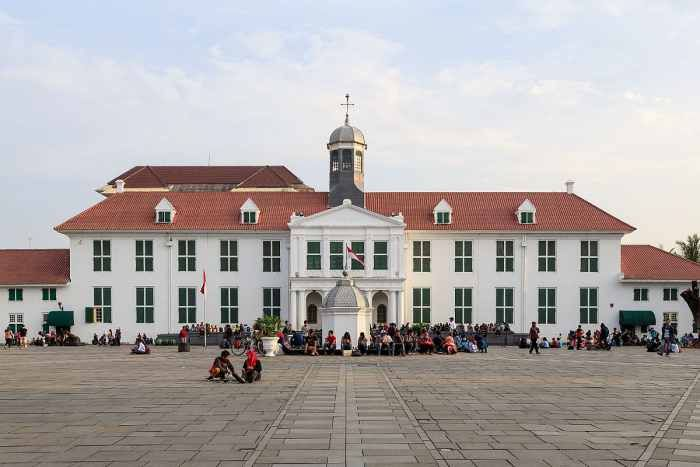
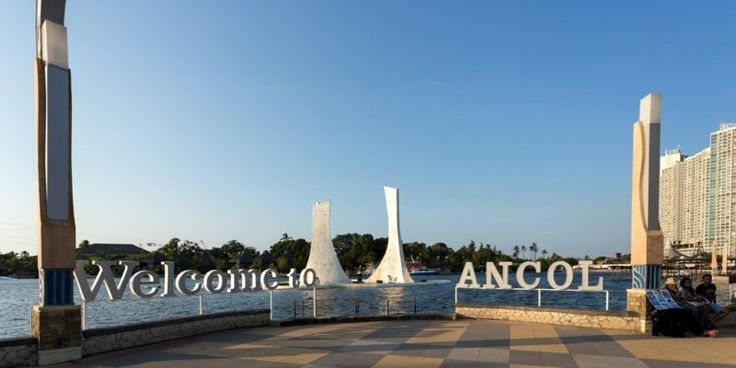
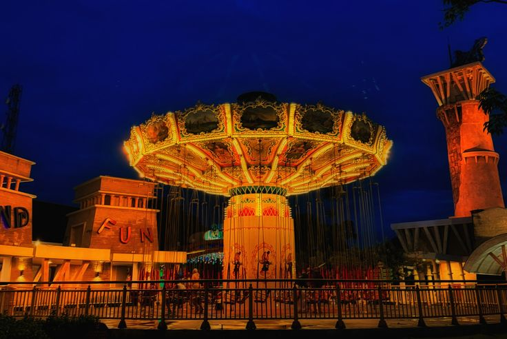
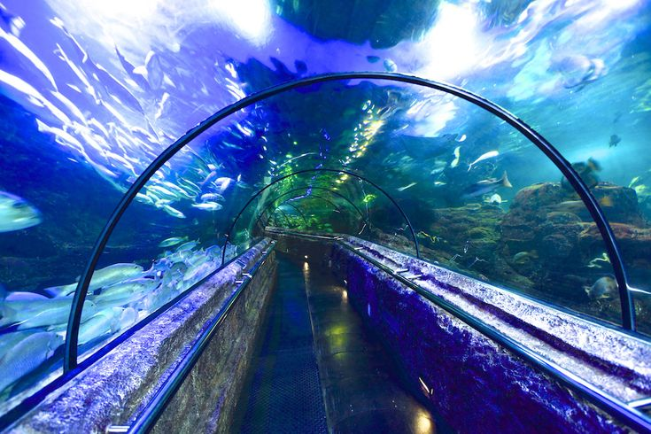
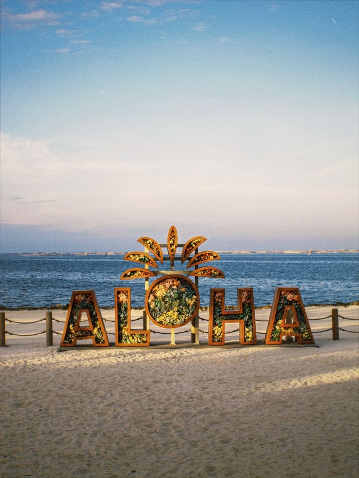

Destinasi wisata Jakarta

Monumen Nasional (Monas)
Ikon paling terkenal di jakarta. nikmati pemandangan kota dari puncaknya dan pelajari sejarah perjuangan indonesia.

Kota Tua
Rasakan nuansa batavia tempo dulu. Tempat sempurna untuk berfoto, bersepeda, dan mengunjungi museum

Pantai Ancol
pusat rekreasi terbesar nikmati Pantai, dufan, sea world, dan berbagai hiburan lainnya

Taman Hiburan Dufan
Taman hiburan dufan adalah Taman hiburan utama kawasan ancol, jakarta Utara, yang menawarkan barbagai wahana seru

Jakarta aquarium
adalah yang paling utama adalah jakarta Aquarium & safai (JASQ) di neo soho MAll

Pantai Aloha PIK 2
Adalah desstiansi wisata pantai buatan di PIK 2 yang menawarkan suasana tropis ala Hawaii dengan pasir putih, spot foto yang sangan bagus